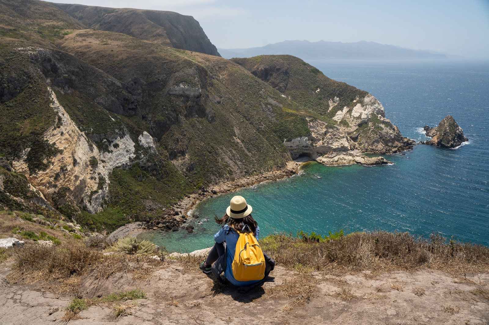

Santa Cruz is one of the five islands that make up the Channel Islands National Park. I've only learned about the islands a few days before and had to see at least one myself. To Santa Cruz, I went, on the 4th of July (2019). And what an adventure it was!
The only way to visit the island, unless one has a boat, is booking through Island Packers.
- Oxnard to East Anacapa: 1-1.5 hrs (year round)
- Ventura to Prisoners Harbor: 1-1.5 hrs (year round)
- Ventura to Scorpion Anchorage: 1-1.5 hrs (year round)
- Ventura to San Miguel: 4-5 hrs (May thru October)
- Ventura to Santa Rosa: 2-2.5 hrs (March thru November)
The company has been transporting people since 1968. Island Packers, besides to/fro transportation, also offers wildlife tours around the islands daily as weather permits. That being said, early reservation is pertinent. I booked the trip to Santa Cruz a few before the 4th and morning rides were already sold out. The earliest departure I could find was 11AM--reaching the Santa Cruz around 12:30PM. The last boat to leave the island is at 4:30PM, but that was also sold out. So 4PM it was; giving me about 3 hours to roam around. Three hours was enough time to do some hiking. This wasn't going to be my last trip to the island anyway. I will be back.
Day trippers and overnighters/campers braved the hour boat ride in the choppy Pacific Ocean. We encountered young sea lions chilling on a red buoy and massive ships journeying through Separation Zone. The captain likened the Separation Zone to a freeway for ships. It was particularly interesting to see the Disney Cruise Ship towering over the Hyundai cargo ship nearby. The cruise ship truly looked like a skyscraper hovering on top of the ocean!

Scorpion Anchorage
After an hour on the ocean, we passed the smallest island, Anacapa. The island looked so bare but with lots of birds hovering around it. We knew we were about to encounter wild California. Beyond the horizon is the silhouette of the biggest island, Santa Cruz. Santa Cruz dwarfs Anacapa. Twenty minutes later, we docked at Scorpion Anchorage, located in the eastern part of Santa Cruz. The water below the dock was crystal clear. Luscious kelp forests swayed as small waves rushed into the shore. Day trippers disembarked first, grouped together, and were given a brief orientation from a park ranger. There were kayakers getting ready for their adventures into the series of caves that wrapped around the eastern part of the island. There were a few blankets on the rocky bay of onlookers and there was a family of 4 getting ready to snorkel. It was a sight unlike any in California. Well, maybe except for Catalina.
The ranger accompanied us to the orientation area where we found remnants of a ranch. Santa Cruz went through series of sheep and cattle ranches from 1869 to ~1984.
The National Park Services (NPS) acquired 25% of the island from the Gherini family. The Nature Conservancy purchased the remaining 75% in 1978 and eliminated the remaining cattle industry.
In 2005, both the Nature Conservancy and NPS embarked on a controversial action to eradicate feral pigs. The NPS already had its share of protesters 4 years prior when it eradicated black rats from Anacapa Island. The black rats were believed to have arrived on the island as stowaways on ships before 1940. The rats proved to be an invasive species that did not only threaten birds but also preyed on Anacapa's deer mouse population. The process of eradication was air dropping poisonous green pellets which killed the rats over a period of 3 days. This moved sparked protests from animal rights activists and debate on the very notion of "native" species.
The next step was the eradication of feral pigs. The pigs had been in Santa Cruz as early as 1850s. Starting with less than 100 pigs, the population grew to about LA Times 4,000 in 2005, threatening the lives of native species including the island foxes and Chumash archaeological sites. "After 150 years, officials claim, there is an urgent need to eradicate pigs, because they are said to trample island vegetation and dig up Chumash Indian grave sites." (SFGATE). The means to this end was to hunt/shoot the pigs. The entire operation took 2 years. This action also faced heavy criticisms from animal rights activists, but conservationists won grounds in court.
As a result of these measures, we now have the privilege of stepping into wild California; as if untouched by humans.
Island Fox
I vowed to see at least one island fox on this trip. Endemic island foxes are found in 3 of the islands in the Channel Islands National Park). Scientifically referred to as urocyon littoralis, variations of the subspecies are endemic in each islan due to their prolonged isolationi from mainland gray foxes. One notable of these unique features is their size. Island foxes are miniatures compared to mainland foxes. They grow up to 12-13 inches tall and only weigh 4-5 lbs. These foxes are not found anywhere else in the world.
- Urocyon littoralis littoralis of San Miguel Island
- Urocyon littoralis santarosae of Santa Rosa Island
- Urocyon littoralis santacruzae of Santa Cruz Island
- Urocyon littoralis dickeyi of San Nicolas Island
- Urocyon littoralis catalinae of Santa Catalina Island
- Urocyon littoralis clementae of San Clemente Island
Upon reaching the ranch area, I didn't have to look far. Other day trippers who were having their lunch on tables next to the ranch house were pointing to the rustling of grass and low-lying foliage. We looked down and there were 2 foxes playing. They were not shy or afraid of people. They would even come closer to you if you have food!
Potato Harbor Overlook
Due to time constraints, I was only able to do one hike. There are several hiking trails on Santa Cruz, ranging from easy to hard. I chose an easy trail with an incredible vista at the end. The Potato Harbor Trail is a 5-mile loop with 603 feet elevation (All Trails). There were no shady areas. Good thing, I had a hat! On the way to Potato Harbor is another trail leading to Cavern Point Loop.
There were at least 5 other people on the trail so it wasn't too lonely of a hike. When we all finally got there, 3 people were already standing on the edge of the cliff, taking in the view. And really, who can blame them when the view is this..
Tips
Santa Cruz Island offers an amazing experience to everyone. But because of its isolation and history, visitors have to be mindful of the following:- Make sure you are not bringing any animals to the island, conciously or unconsciously. Clean your shoes and other belongings before disembarking.
- Remember that island foxes are still wild even when they look friendly.
- There is no food for sale on the island so bring enough for the day.
- Potable water is only available on the Scorpion Ranch area.
- There is no electricity so charge all your gadgets before going.
- There is absolutely no cellphone signal or WiFi.
- Do not get injured! 911 is going to take a while to get to the island.
- What comes with you, goes with you. All trash must be taken back to the mainland.
- Daytrippers, don't miss the last boat or you will be sleeping among the stars.